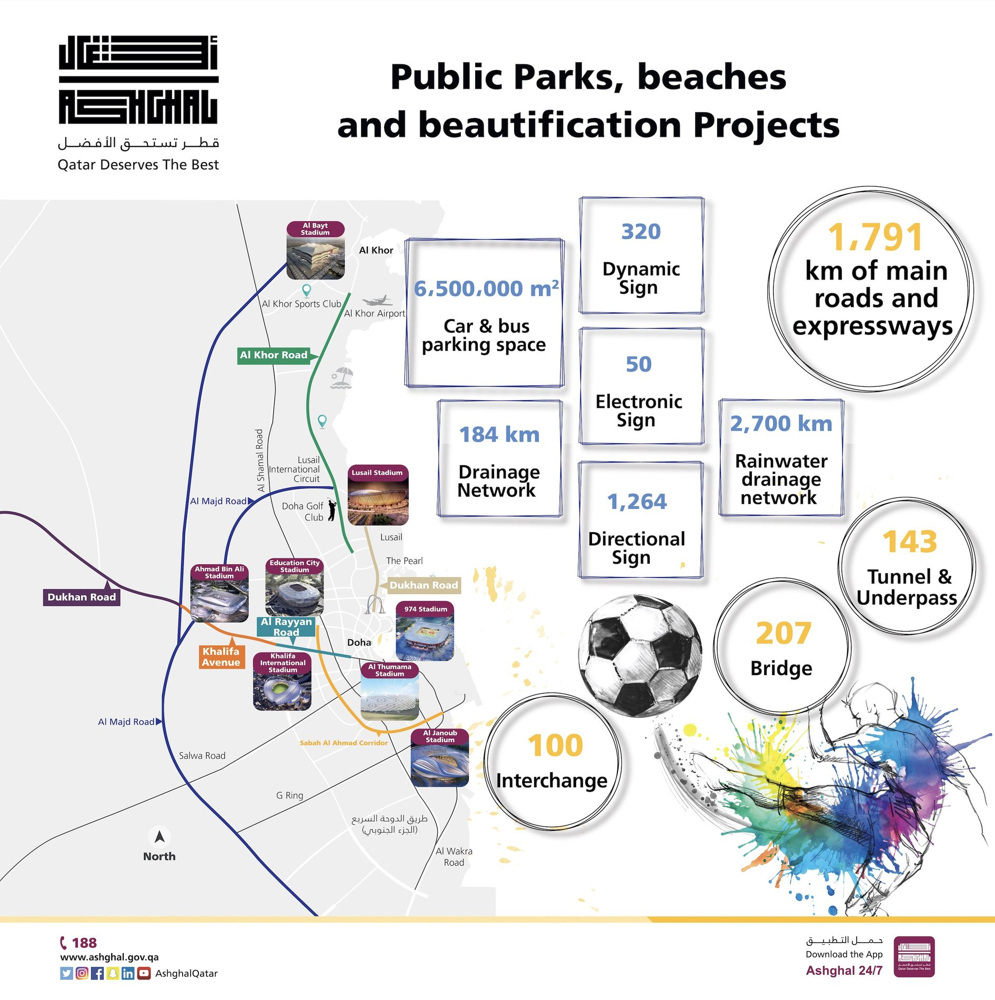
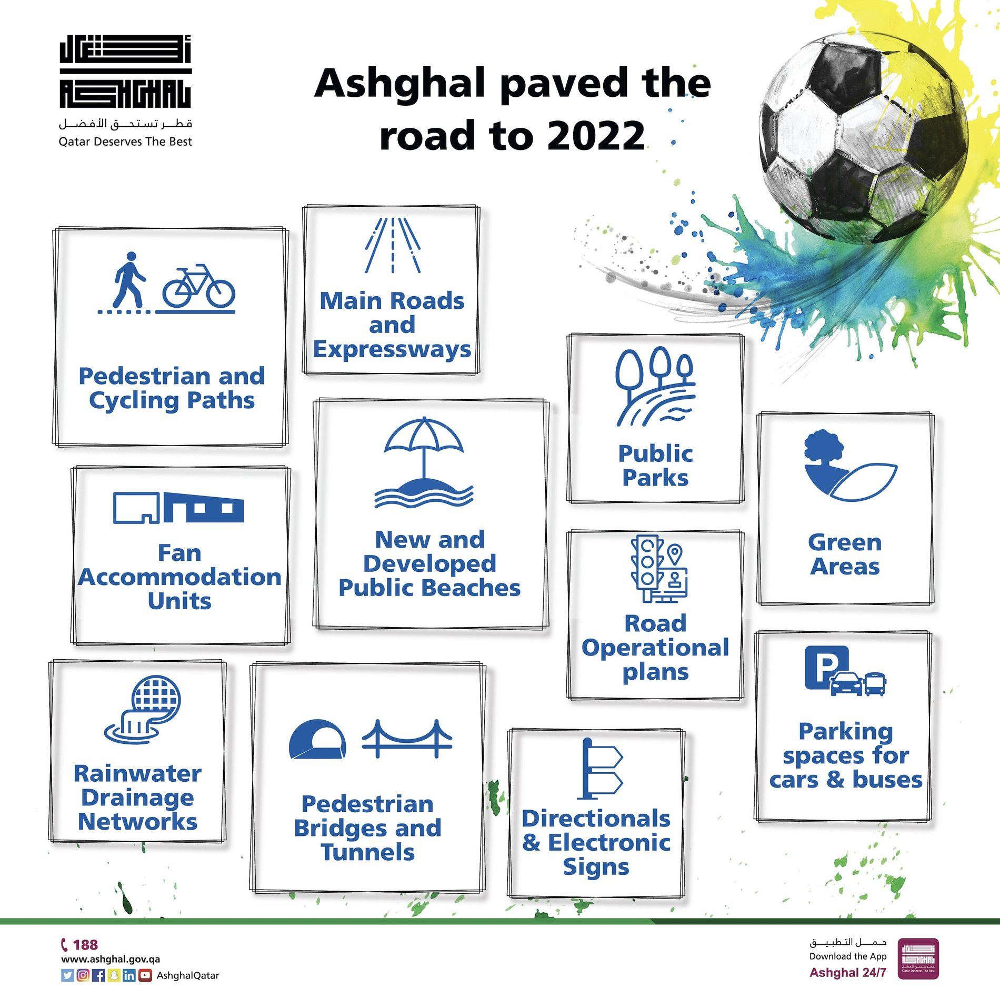
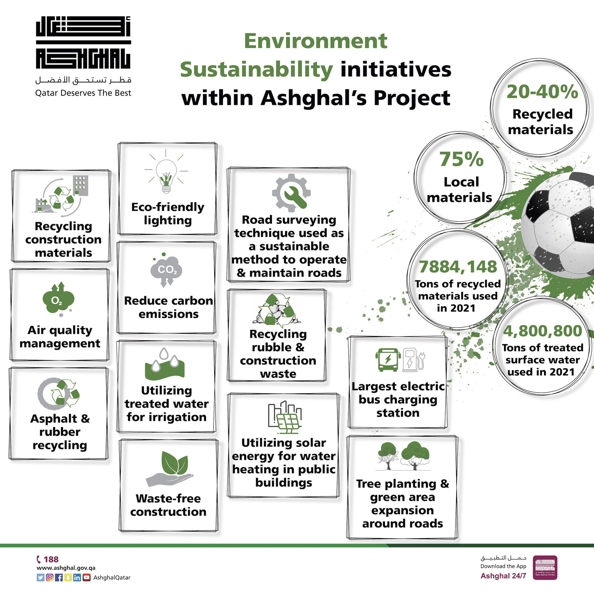

Road to FIFA World Cup Qatar 2022 – Awareness
Campaign
A campaign highlighting Ashghal’s role in preparing Qatar for the FIFA World Cup 2022, showcasing key projects such as roads, pedestrian and cycling paths, public parks and sustainability initiatives through colourful visuals and infographics.
1. Public Parks, Beaches & Beautification Projects
An infographic highlighting Ashghal’s key infrastructure and beautification projects in preparation for FIFA World Cup Qatar 2022.

2. Ashghal Paved the Road to 2022
A visual overview of the projects that helped prepare Qatar for the World Cup, from road networks and public parks to pedestrian and cycling facilities.

3. Environmental Sustainability Initiatives
An infographic showcasing Ashghal’s commitment to sustainability through recycling, greener infrastructure and environmentally friendly practices. The poster gained wider visibility after being shared by high-profile figures in Qatar.
